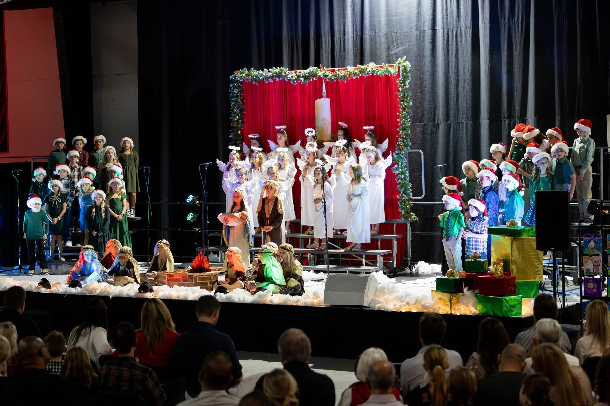
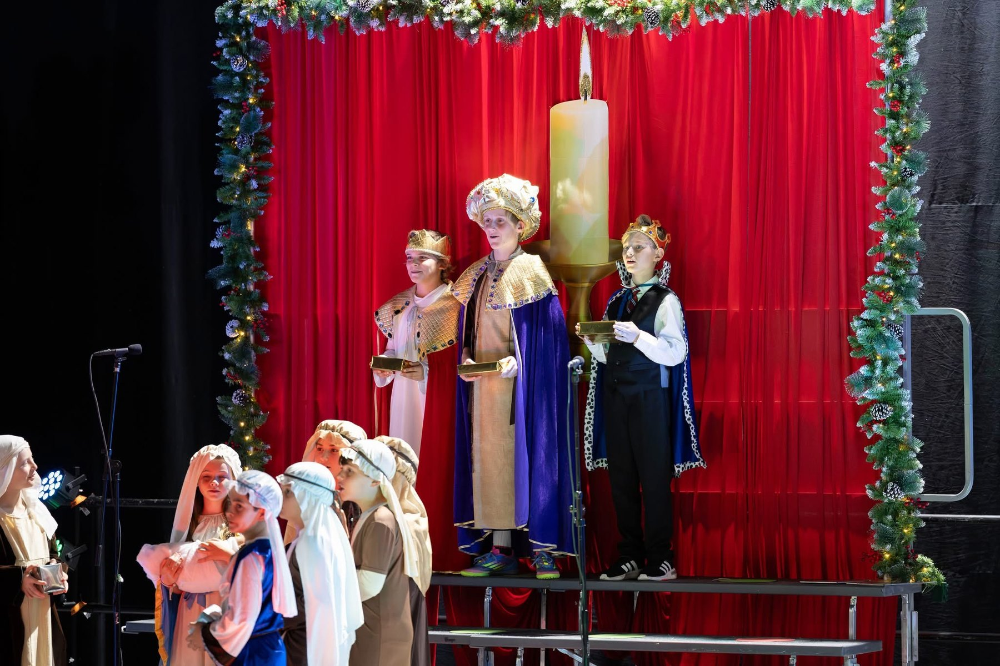
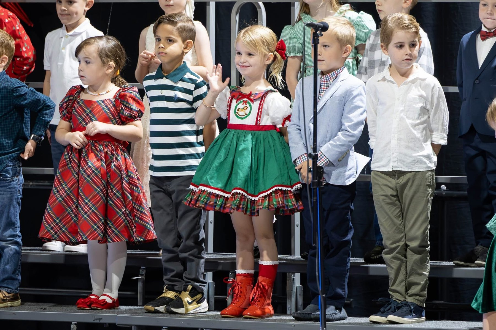
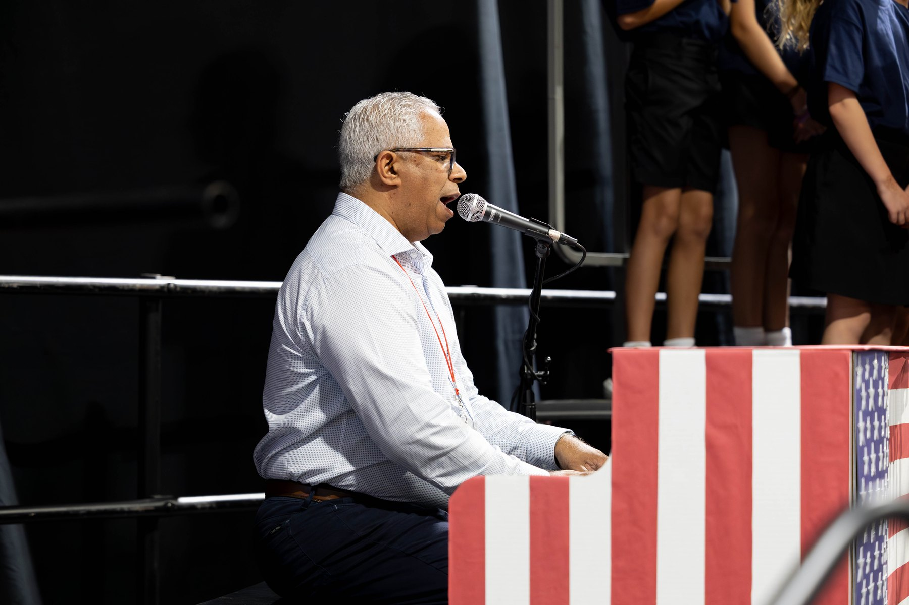
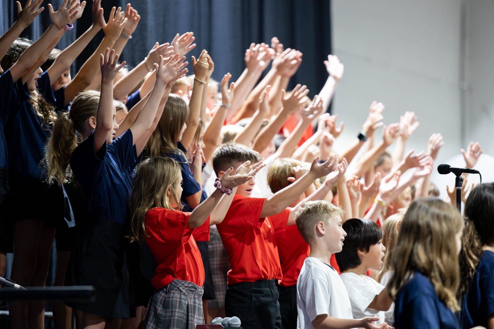
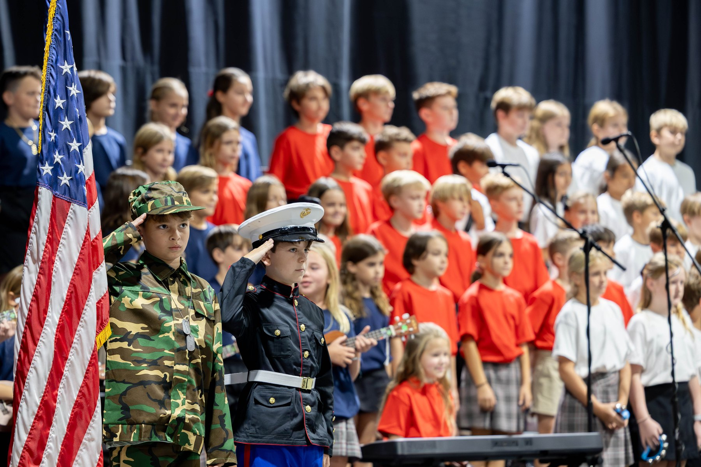
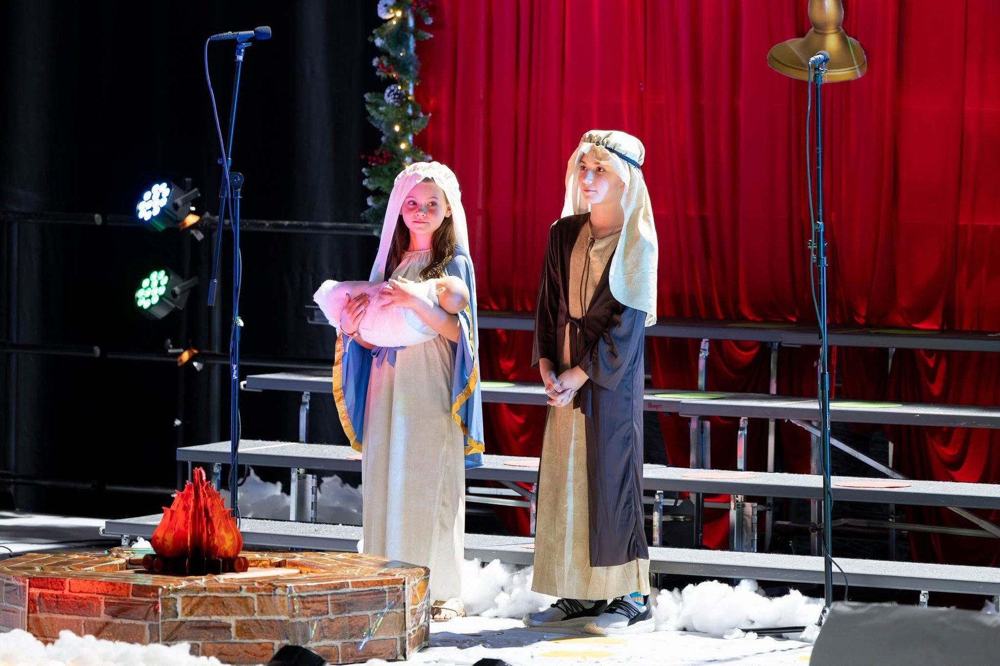
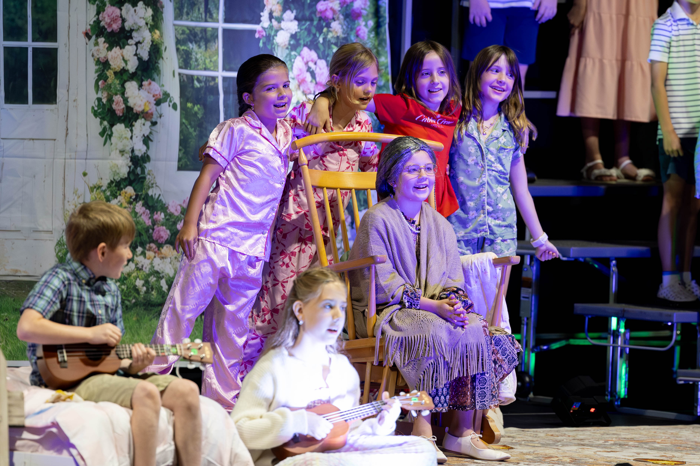
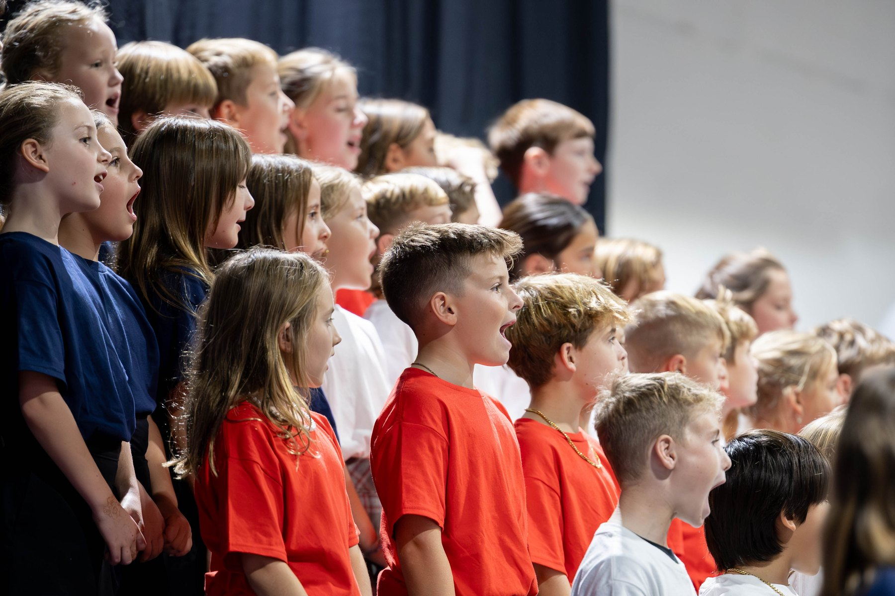
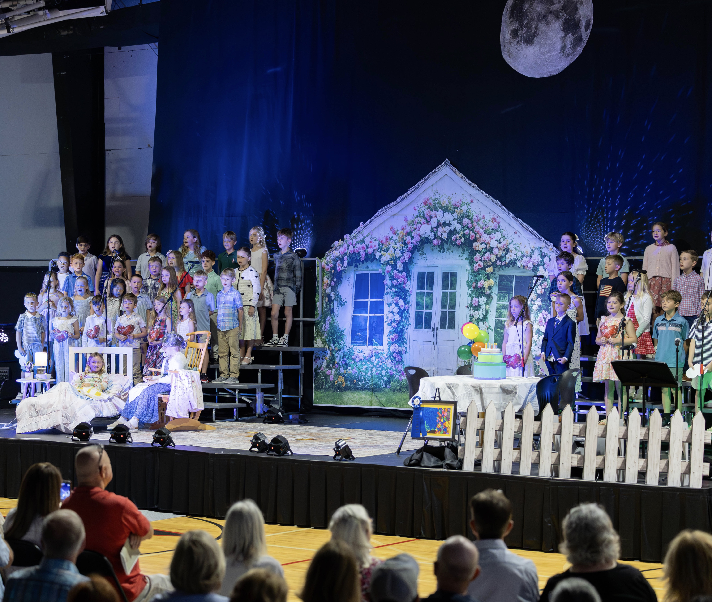

Every performance tells a story.
Scroll Down
Beautiful childhood memories through music and worship
Created With Heart
Music, Direction & Production Natanael Cabrera
Visual Design & Stage Styling Gina Cabrera

Before the applause
The quiet moments shaped the music.
The Journey Behind the Performance
Scenes from the story behind the songs.
Inside the Classroom
Small moments of learning, rhythm, coordination, and growth.
Learning Through Music
Moments Behind the Music


Every image should feel like a memory coming back.
Generations of Joy
A year told like chapters in a film.

Chapter I
Beginning of the Year

Chapter II
Performing Together

Chapter III
Veterans Day

Chapter IV
Christmas Program

Chapter V
Grandparents Day

Chapter VI
Choir

After months of preparation